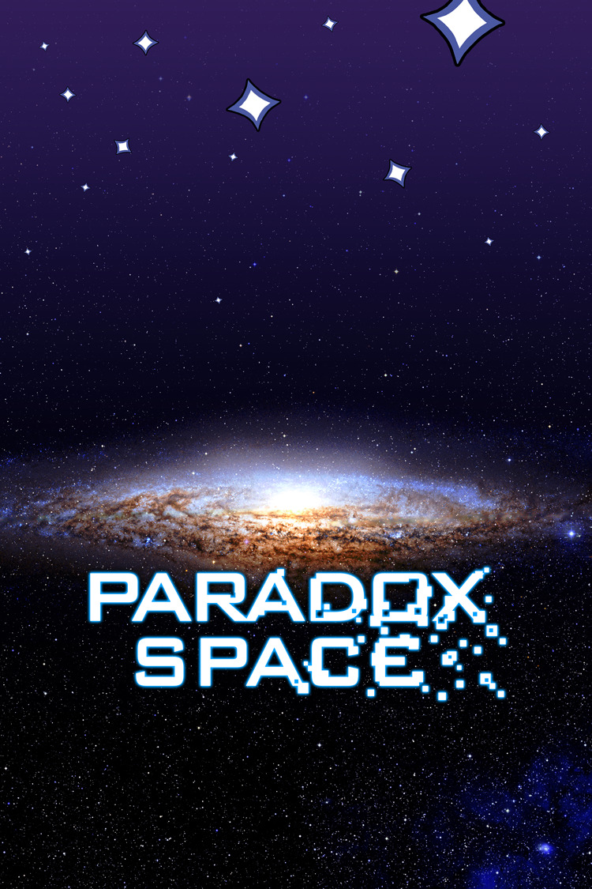
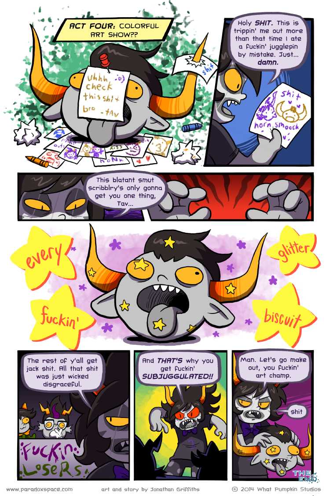
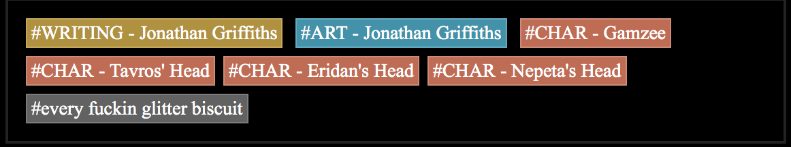
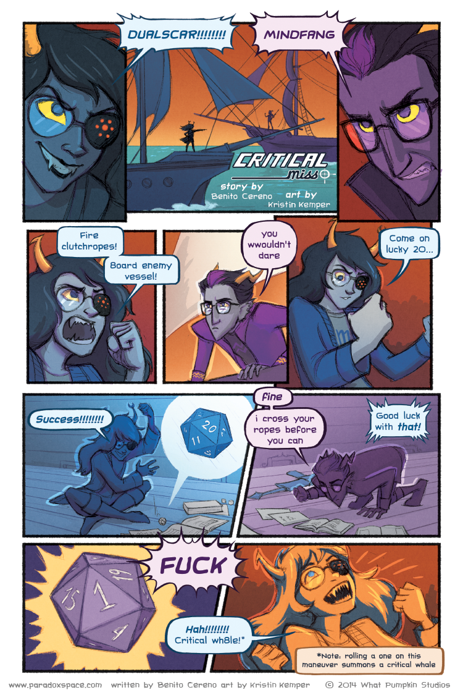
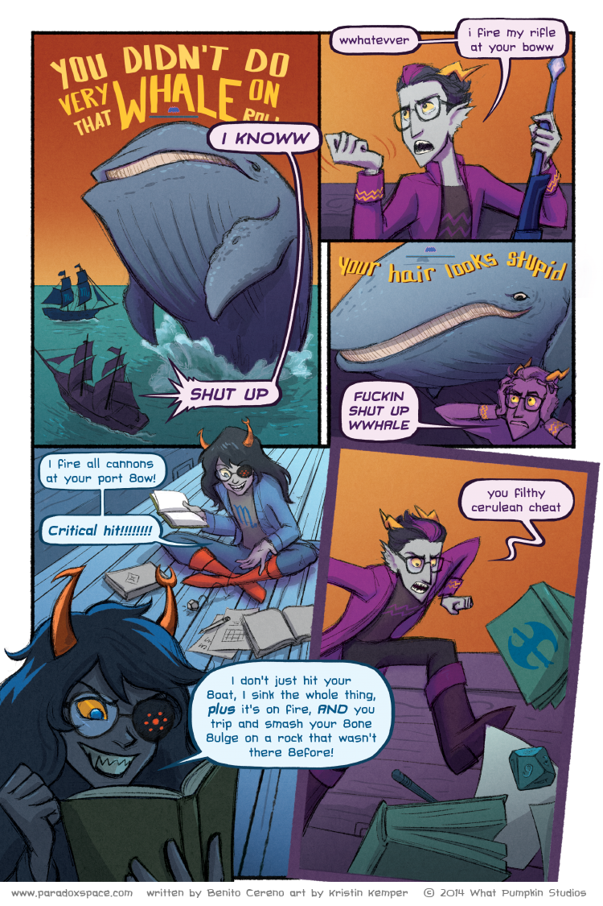
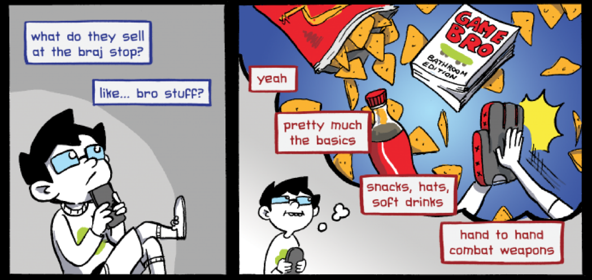
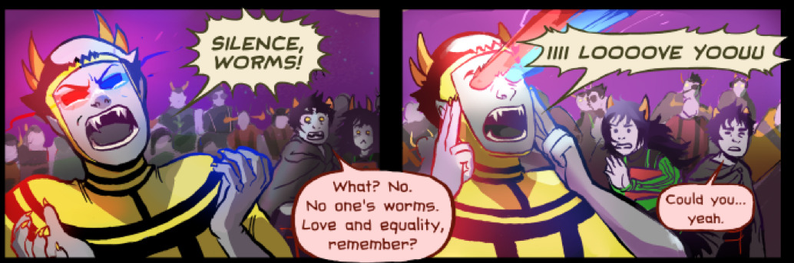
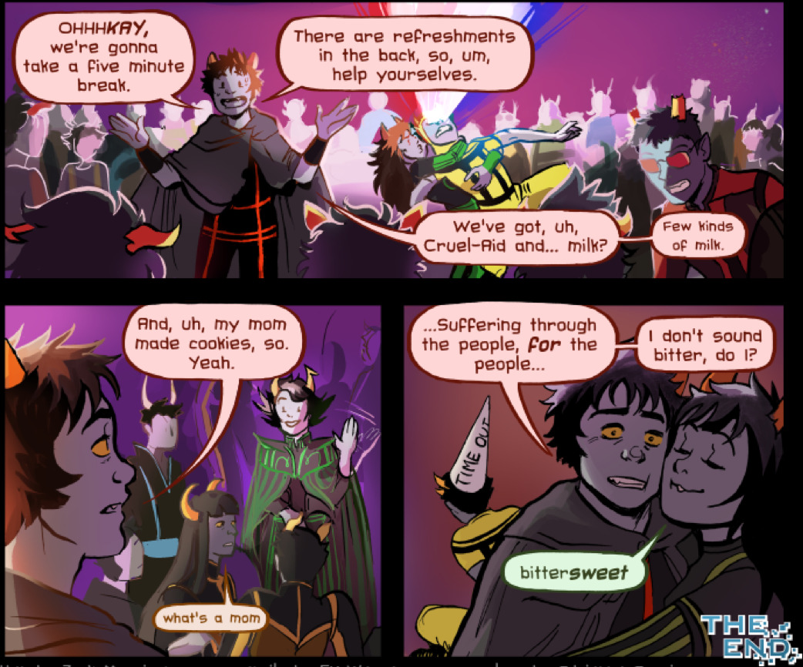

Somewhere along the line I stopped being annoyed at how awesome Homestuck is. Now that I’m caught up I’m mostly just basking in joy over the great writing and storytelling and I’m so glad I read it.
But it’s also kind of weird, isn’t it? I’m not going insane, right? Homestuck is a ridiculous comic novel thing, but it’s also so. fucking. good.
Also now that I’m done with it, I want to evangelize to people, but it took me months of dedicating most of my free time to reading it, and I don’t necessarily want to do that to my friends.

Soooooo I guess I’ll do this since it was requested. And I am avoiding actual work.

…
Seriously?
Okay, the art is fucking adorable. I mean, I just want to pinch Gamzee’s cheeks. And then sit him down and have a long discussion of what is and is not acceptable. Spoiler: Playing games with decapitated heads and making labels for them out of their blood is not acceptable.


Gamzee lurves Tavros even when he’s dead.
And not dead like all the ghosts who were totally doing stuff, just Tavros’s lifeless corpse. I am so glad that story ended there.
Also lol, their heads are tagged as characters. That’s adorable.


Oh my god a critical fail roll summons a whale. That proceeds to criticize Eridan. This is perfect and awesome and I love it.

Jane, that’s how GCats lets you know he loves you and doesn’t want you to starve!

I want to live in a universe where bro stuff involves hand to hand combat and not like, getting drunk and being misogynistic and vaguely threatening.

I was trying to find a good dashcon picture to make a joke about, but then I found this instead and it’s so much better.

Brb, need to go glue my heart back together.
Dave you poor bb. You poor neglected child. That’s just awful.

Hee, the Ψiioniic doesn’t really understand the love and equality part of this. It’s for everybody, not just our dear Signless. But A for enthusiasm!

“What’s a mom”
I died, guys. This is beyond the grave blogging. That’s too perfect.

Nepeta is the absolute cutest. She is vicious and adorable, just like a kitty.

Fuck being nice, amirite Rose? Cards are boring without stabbings!
Sooooooooooo.
Who else has started looking at their life through a Homestuck POV?
Not just for myself, I look at someone who is clearly trying to avoid solving issues they know they have, and I go, “Damn, they would be so fucked in Homestuck.” (Obvs BKEW has told me all about how what Skaia wants from you is that you deal with your personal failings to succeed.) And then I’m like, “Go me, being in therapy all the time, dealing with my weaknesses, trying to be a better me.” Not that it’s just good for my own happiness and makes me a better citizen and potentially a better teacher when I get to that, my type of depression makes it kind of hard to care about those, but reframing it in terms of Homestuck is so much easier.
Also I think about how to be a better Rogue of Light, but everybody thinks about how to excel at their classpect, right? :D
Oh hey I’m back with more post-liveblog commentary! I’m answering questions sent to my askbox.
Your thoughts about narrative glitching out of the comic bounds lately and narrative structure as a whole?
At this point the fourth wall is beyond repair, so saying that I think it will be broken further is an act in futility. I think it either is because of John being “unstuck in existence” or an indication of another external force acting on the characters like the exiles or Hussie’s avatar. John’s affecting the entire storyline, including potentially changing the past in ways that stable loops can’t account for. He’s breaking outside the boundaries of not only the story, showing up in places he doesn’t belong and that his character has no business being. It makes sense then that this would lead to the actual images going places they don’t belong, that is, outside the space set aside for the panels. (This would be much easier if I knew the proper website terms.) My prediction is that we’ll see the pictures and possibly the text continue to break out of the site’s boundaries in bigger ways. Ultimately John could end up reaching out to the reader. Since Homestuck has a lot of parallels with Earthbound (whose final boss was defeated by praying to the player, among other things) and with the Neverending Story (which involved another reader saving the Childlike Empress and the world), and since it began with reader input, it only makes sense, right? Although since Homestuck has so many fans it probably won’t be literal reader involvement. Either Hussie could pick whatever response he wanted because everything will be offered, or it’d be something corny like a poll.
On the other hand, to go with my nagging suspicion that Lord English will not be the Final Boss, I think we might get another meta layer added, much the way that the exiles were hinted at, then added as an extra to the story, then integrated into it completely. (And Hussie’s Avatar, and even the trolls.) Someone who will see the story from the outside, in this case in a bigger picture. I’m kind of hoping for an adult Cherub who would have a territory containing…Actually I’m not sure that would be feasible, but it would be cool, right?
Dave’s special downgraded welsh sword, what it can be for?
One of the things that I checked out while thinking about this question was if there was a difference in appearance between the two Caledfwlches, and I was a bit surprised to see there wasn’t one. I’d assumed that the first Caledfwlch would be more colorful and not be combined with a cue-ball, but it appears to be the same sword. My guess is Dave is going to put the Caledfwlch in the stone on LOHAC himself to make it available for something or to teach himself a lesson.
Since Homestuck is really gamey (like venison!), it may be that the weapon that is a downgrade in certain aspects has a property that makes it overpowered or simply necessary for a certain fight, like taking a hit in attack power to lower the chances of status ailments. Dave is having a bad crisis of conscience and feeling pointless, this sword could show him that the idea of being perfect or the best is flawed and sometimes a downgrade is better.
Any guesses about what lies in the future for Aranea?
I really think Roxy is going to wake up and steal the ring for Calliope. I mean, she’s a rogue, so stealing things for the benefit of others is right in her wheelhouse.
At that point we find out if continuing to wear the ring is necessary to continue living. The characters continually suggest it is, but that could be a big red herring. I think she won’t be able to stay alive without it, but I also think she won’t go back to being a ghost. BKEW told me about his theory that the ring of life and the ring of void are the same, and on that note I think she might end up on the void side of thing. She’s currently all full of life on like a dozen different levels, so removing the ring could end up double killing her, or she miiiiight invert to an heir of doom prince of void (no more 2AM blogging for Milli).
Either way I don’t see her making it out of here in a good state. She’s demonstrated too much arrogance to not have a huge punishment coming. I’m still really pissed at her for killing Jade, even if Jade was possessed.
Your liveblogging was fast, so by following you I would have missed heaps and spammed my dashboard. It was so great though! I gave your tumblr page a dedicated tab for months that I could refresh multiple times a day and see new posts. I didn't see you answer some big questions though, did you enjoy homestuck? What was good and what was bad? How would you recommend it to a friend with lots of free time? Most memorable quote? Favourite fanfic? Anyway, thank you so much for your liveblogging! :D
Thanks for answering! I am so glad you enjoyed my liveblog~~ I’m totally blushing so hard that you gave me a dedicated tab, that’s so awesome.
That makes sense, why you would follow me after I finished. I seriously ate my way through Homestuck (and it was delicious). I really loved Homestuck, I think it’s a fantastic piece of storytelling with amazing dialogue and really solid worldbuilding. The pacing after the fourth act is fucking amazing. I’m really impressed how Hussie could keep cutting between multiple storylines and characters and not cause cliff-hanger whiplash (see: Lost, which was kind of Homestuck-esque except where Homestuck is awesome and makes better than good on its promises, Lost was a terrible disappointment that laughed at you for expecting anything of it).
I definitely would recommend it. I’ve tried to but none of my friends are biting. I think it’s weakest point is the beginning, when the art isn’t as good and it’s really directionless. grimdarkthroes told me that it would take like 20 hours to get through the beginning, to the good stuff, and I basically laughed at her, which seemed totally reasonable because I give most things about 10 minutes to catch my interest or I quit. I have awesome taste and they know it, but nobody trusts me on Homestuck. What can I say.
For the weak parts…I really disliked the jokes about puppet ass and cock, like, on a visceral level, and how those puppets and the other dolls looked. Just, ew, gross. A part of me also wants to complain a bit about the gender politics (eg the gender specific classes and what that means, that sort of thing) but considering the comic almost has a 50-50 male-female ratio and has lots of female-female relationships and has a non-exploitative lesbian couple, it seems like nitpicking. Also I suspect that we’ll get better explanations as to why male tends to mean destructive while female means creative and why that’s not like, sexist or gender prescriptive.
“Hi karkat!” is definitely the most memorable quote for me. I just…that conversation was the best conversation.
And for fics I’ve really only read three. I loved loved loved Loophole, and then read Unwanted Free Ugly Troll, which I think suffered from not wanting anything too bad to happen to the characters itis, which is fine, y'know. But Loophole took the UFUT world and made it real. I also just finished Hemostuck, as I mentioned, which I also love, even if it made me really like Eridan. And it made kismesisitude make sense. I’ve got more recommendations saved but the lengths keep freaking me out. My askbox is always open for more suggestions, too!
Hussie used to have something posted somewhere where someone asked him about gender and classes, and he said that other than the master classes, if anything the female classes skew toward the active and the male classes skew toward the passive; he implied that witch is the most active regular class. And a lot of the classes aren't gendered at all, or aren't strictly gendered. (E.g. thief is explicitly stated to be only mostly female, we see both male and female knights, seers, mages, rogues...)
I figured it was something like that. That it seems bad at first because rawr equality but it has internal logic and shit.
It just seems odd that he would choose to have gender exclusive classes without explanation, and I’m sooooo used to douchey sexist scifi/fantasy.
But like I said, it’s not really worth complaining about. I’d rather gush about holy shit, Rosemary is such a great ship that is never played for the male gaze and female friendships and women kicking ass and the Condesce.
Would anyone happen to have a link to that, though? I know people have access to like, all the stuff Hussie said but then deleted.